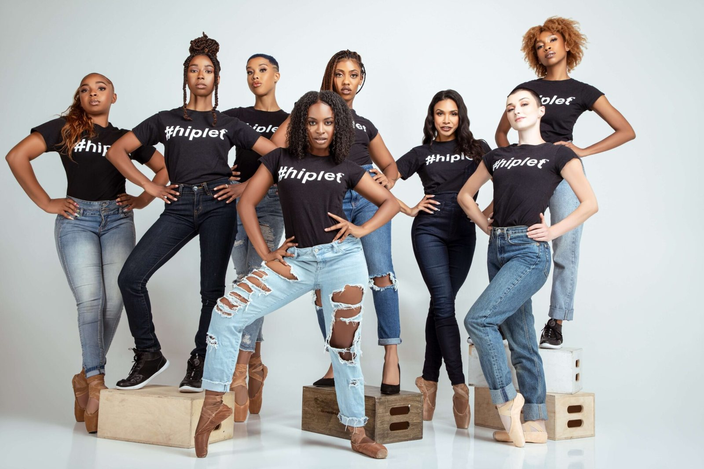

The Hiplet Ballerinas on America's Got Talent. Watch on YouTube ↗
| Role | Designer and builder of the agent |
| Client | Chicago Multi-Cultural Dance Center (CMDC), home of the Hiplet Ballerinas |
| When | November 2026, ongoing |
| Built for | CMDC's operations lead, to speed up tour booking |
| Tools | Claude, Gmail drafts, scheduled agents, a shared tracker doc, a budget workbook |
01Why this one is personal
I trained as a ballerinas for over 15 years, so dance always had a special place in my heart. I even completed my senior honors thesis on the legacies and histories of black ballerinas past and future. From that I learned of Hiplet Ballerinas, who were changing the face of ballet by doing hip hop and afro-styles on pointe.
Although I was no longer training professionally, when I moved to Chicago, I was so excited to take my weekly ballet classes at the home of Hiplet Ballerinas, Chicago Multicultural Dance Center. After about a year taking classes, I saw the dancers I loved watching had to shut down for the season due to grant and funding troubles. I wanted to help however I could with fundraising and tour booking as a volunteer, because I want this place to still be here in thirty years for kids across chicago to keep the legacy and beauty of this historic dance center alive!
01What is 'Hiplet'
Hiplet is ballet on pointe fused with hip-hop and African, Latin and jazz movement. Homer Hans Bryant, a former Dance Theatre of Harlem dancer, created it in the studio where I take class. It was made so that ballet stays relevant to young people and makes room for bodies and skin tones the art form has long left out.
That is what I mean by helping ballet stay alive and well. The form survives when companies like this one can pay their dancers and get in front of new audiences.
WGN News on how Homer Hans Bryant created Hiplet in Chicago. Watch on YouTube ↗
02The problem
The company went viral in 2016 and has performed across the United States and abroad. The fame never turned into stable funding.
- Touring kept the company in front of audiences, but tour manager costs left no significant profit to help it grow.
- Fees were set without the full cost of the company in view: pay, pointe shoes, admin and airfare.
- The Executive Director handles grants, booking and operations herself.
A tour manager earns that fee by doing research, outreach, follow-up and logistics. The question behind this build: could an agent do that legwork for the operations lead, so booking moves faster while people keep the relationships and every decision?
03What the agent does
Two scheduled agents, one shared record, and a budget model they answer to.
| Piece | What it does |
|---|---|
| Daily outreach agent | Monday to Thursday it researches five presenters in one region, drafts a personalized email to each, checks the inbox for replies, and sends the operations lead a reminder to review and send |
| Weekly agent | Tracks what was sent, who replied and what bounced; drafts follow-ups at 10 and 21 days; verifies contacts; proposes changes to its own rules |
| Tracker and activity log | The single record both agents read and write: rules, presenters, metrics, every action with its source |
| Budget levers sheet | Every cost is a lever (dancers, shoes, who travels, fly or drive), so we can see what a date really costs and set a fee floor |
| Context file | One document with the company's history, people, past tours and needs, so any AI session starts informed |
04Context, Harness, and Infrastructure Behind it
The model is one part of an agent. Four things around it make this one dependable for a small team.
| Context | A single context file gives every run the company's history, people, past tours and needs. The shared tracker holds the outreach rules and presenter records. A budget model, built from the company's real per-show costs, tells the agent what a tour date has to cover. |
| Harness | Two scheduled runs do the work. Monday to Thursday the agent researches five presenters in one region or type, such as Chicago venues or HBCUs in the South, and drafts a personalized email to each. A weekly run tracks replies and bounces, drafts follow-ups, and compares reply rates by group. |
| Infrastructure | Built on Claude with scheduled agents, Gmail drafts, a shared tracker doc and a budget workbook. Every search, draft and status change is logged with its source, so the team can see what the agent did and why. |
| Human in the loop | The agent drafts and recommends. It never sends to a presenter, quotes a fee, holds a date, signs or pays. The operations lead reviews and sends every email, and the Executive Director approves any fee, date or contract term. Rule changes the agent proposes take effect only once approved. Warm contacts are flagged for the team, and no email address is ever guessed. |
05Results so far
The outreach is still early. The agent tracks each of these as it runs:
- Presenters researched and emails sent
- Reply and interest rates, overall and by group
- Calls booked
- Dates on hold for the 2027-28 season
More on outcomes soon, as the results come in.
06What I learned
- The valuable part was the constraints. Deciding what the agent may never do took longer than writing what it does.
- A nonprofit's numbers live in people's heads. The model only worked after I sat with the Executive Director and her old spreadsheets.
- Small teams need help that leaves them in charge. Drafts and reminders fit a stretched schedule better than a dashboard nobody opens.
07What is next
- Build the booking assets presenters ask for: one-sheet, reel, tech rider and fee schedule.
- Add a deal desk that checks every inquiry against the fee floor.
- Add travel options once dates are confirmed.
08Honoring dance

Its an honor to be able to use my skills in tech to help groom and grow the legacy of a dance company so rooted in the black dance community. This is just one of the many ways that shows that tech isn't just about how fast something can go or keywords describing the latest model, but the innovation that we're doing here truly helps people lead better lives, sustain and grow their community businesses, and keep whats historical and great about the things we love up and running.
Building technology isn't just a gift, it's an honor.